Lagrangian Equations
| > | gravity := <0,-g,0>; |
| 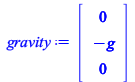 | (5.1.1) |
Kinetic and potential energy for mass m1
| > | KE1 := kineticEnergy(m__1,G1,Rs__1, 0,0,0,0,0,0);
PE1 := gravitationalEnergy(m__1,G1,gravity); |
![rtable(1 .. 3, 1 .. 3, [[0, 0, 0], [0, 0, 0], [0, 0, 0]], subtype = Matrix);](images/Homework2_StefanoTonini248413_105.gif) |
|
| 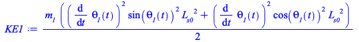 | |
| 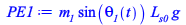 | (5.1.2) |
Kinetic and potential energy for mass m2
| > | KE2 := simplify( kineticEnergy(m__2,G2,Rs__2, 0,0,0,0,0,0) );
PE2 := gravitationalEnergy(m__2,G2,gravity); |
![rtable(1 .. 3, 1 .. 3, [[0, 0, 0], [0, 0, 0], [0, 0, 0]], subtype = Matrix);](images/Homework2_StefanoTonini248413_108.gif) |
|
| 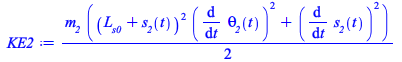 | |
| 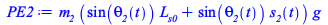 | (5.1.3) |
Kinetic and potential energy for mass m3
| > | KE3 := simplify( kineticEnergy(m__3,G3,Rs__3, 0,0,0,0,0,0) );
PE3 := gravitationalEnergy(m__3,G3,gravity); |
| 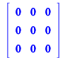 | |
| 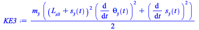 | |
| 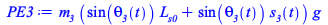 | (5.1.4) |
Lagrangian function
| > | LagrF :=KE1+KE2+KE3-PE1-PE2-PE3; |
| 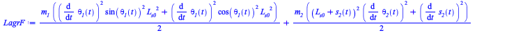 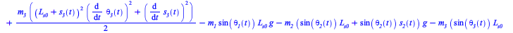 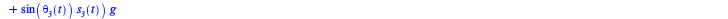 |
(5.1.5) |
Generalized coordinates
| > | q_vars |
| 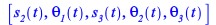 | (5.1.6) |
| > | leqns := lagrangeEquations(LagrF,Phi,q_vars) |
| 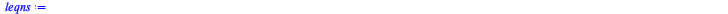 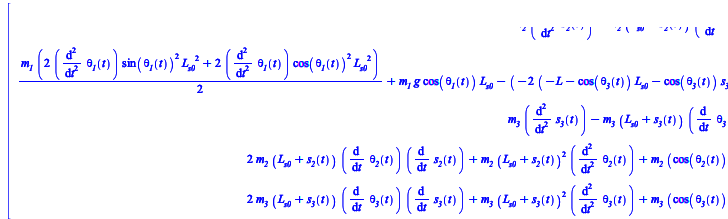 |
(5.1.7) |
| > | z_vars := [ op(q_vars), lambda__1(t)]; |
| 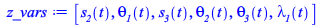 | (5.1.8) |
| > | MM, ff := GenerateMatrix(convert(leqns,list),diff(q_vars,t,t)) |
| 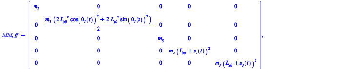 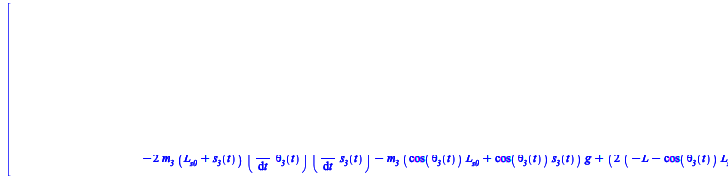 |
(5.1.9) |
Spring Ks2 and Damper Cs2 Forces
| > | fe__2(t) := -K__s2*s__2(t)-C__s2*diff(s__2(t),t); # spring force model
FE__2 := <fe__2(t),0,0>; |
| 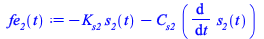 | |
| 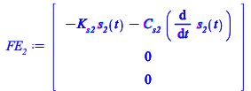 | (5.1.10) |
Spring Ks3 and Damper Cs3 Forces
| > | fe__3(t) := -K__s3*s__3(t)-C__s3*diff(s__3(t),t); # spring force model
FE__3 := <fe__3(t),0,0>; |
| (5.1.11) |
| > | FE__2:=Rs__2.FE__2;
FE__3:=Rs__3.FE__3; |
| 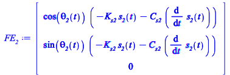 | |
| 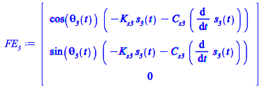 | (5.1.12) |
| > | Q_genF := generalisedForces(G2,FE__2,q_vars)-generalisedForces(P2,FE__2,q_vars)+generalisedForces(G3,FE__3,q_vars)-generalisedForces(P3,FE__3,q_vars); |
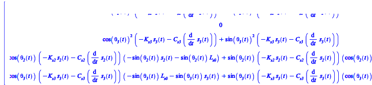 |
(5.1.13) |
Full set of equations
| > | ode_sys := leqns-Q_genF; |
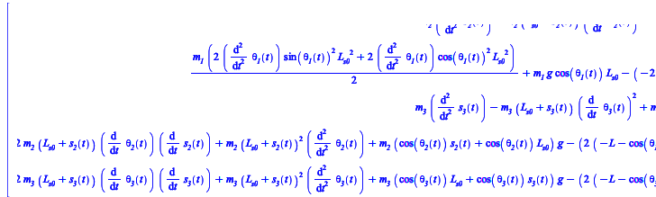 |
(5.1.14) |